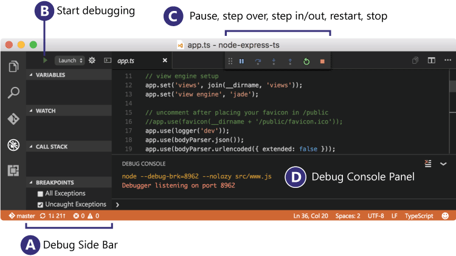
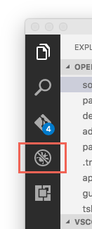
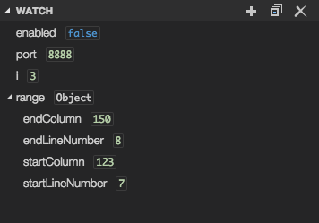

Debugging
One of the key features of Visual Studio Code is its great debugging support. VS Code's built-in debugger helps accelerate your edit, compile and debug loop.

Debugger Extensions
VS Code has built-in debugging support for the Node.js runtime and can debug JavaScript, TypeScript, and any other language that gets transpiled to JavaScript.
For debugging other languages and runtimes (including
PHP,
Ruby,
Go,
C#,
Python,
C++,
Powershell
and
many others), look for Debuggers
extensions
in our VS Code
Marketplace
or click on Install Additional Debuggers in
the top level Debug menu.
Below are several popular extensions which include debugging support:
Tip: The extensions shown above are dynamically queried. Click on an extension tile above to read the description and reviews to decide which extension is best for you.
Start Debugging
The following documentation is based on the built-in Node.js debugger, but most of the concepts and features are applicable to other debuggers as well.
It is helpful to first create a sample Node.js application
before reading about debugging. You can follow the
Node.js walkthrough
to install Node.js and create a simple "Hello World"
JavaScript application (app.js). Once you have a
simple application all set up, this page will take you through
VS Code debugging features.
Debug View
To bring up the Debug view, click on the Debugging icon in the Activity Bar on the side of VS Code.

The Debug view displays all information related to debugging and has a top bar with debugging commands and configuration settings.
Debug Menu
The top level debug menu has the most common debug commands:
Launch Configurations
To debug a simple app in VS Code, press
kb(workbench.action.debug.start) and VS Code will
try to debug your currently active file.
Tip: You can debug a simple application even if you don't have a folder open in VS Code but it is not possible to manage launch configurations and setup advanced debugging. For that, you have to open a folder in your workspace.
For advanced debugging, you first have to open a folder and
then set up your launch configuration file -
launch.json. Click on the Configure gear icon on
the Debug view top bar and VS Code will generate a
launch.json file under your workspace's
.vscode folder. VS Code will try to automatically
detect your debug environment, if unsuccessful you will have
to choose your debug environment manually.
Here is the one generated for Node.js debugging:
{
"version": "0.2.0",
"configurations": [
{
"type": "node",
"request": "launch",
"name": "Launch Program",
"program": "${file}",
"cwd": "${workspaceRoot}"
},
{
"type": "node",
"request": "attach",
"name": "Attach to Process",
"port": 5858
}
]
}
Note that the attributes available in these launch configurations vary from debugger to debugger. You can use IntelliSense to find out which attributes exist for a specific debugger. In addition, hover help is available for all attributes. If you see green squigglies in your launch configuration, hover over them to learn what the problem is and try to fix them before launching a debug session.
VS Code debuggers typically support launching a program in
debug mode or attaching to an already running program.
Depending on the request (attach or
launch) different attributes are required and our
launch.json validation and suggestions should
help with that.
Review the generated values and make sure that they make sense for your project and debugging environment.
To add a new configuration to an existing
launch.json, use one of the following techniques:
- Use IntelliSense if your cursor is located inside the configurations array.
- Press the Add Configuration button to invoke snippet IntelliSense at the start of the array.
- Choose Add Configuration... option in the debug dropdown.

Select the configuration named Launch using the
Configuration dropdown in the Debug view.
Once you have your launch configuration set, start your debug
session with kb(workbench.action.debug.start).
The other way to run your configuration is through
Command Palette
(kb(workbench.action.showCommands)), by filtering
on Debug: Select and Start Debugging or
typing 'debug ', and selecting the configuration
you want to debug.
Global Launch Configuration
We support adding a "launch" object inside your
user settings. This "launch" configuration will
then be shared across your workspaces. For example:
"launch": {
"version": "0.2.0",
"configurations": [{
"type": "node",
"request": "launch",
"name": "Launch Program",
"program": "${file}"
}]
}
Tip: If a workspace contains a
"launch.json"the global launch configuration is ignored.
Debug actions
Once a debug session starts, the Debug actions pane will appear on the top of the editor.
-
Continue / Pause
kb(workbench.action.debug.continue) -
Step Over
kb(workbench.action.debug.stepOver) -
Step Into
kb(workbench.action.debug.stepInto) -
Step Out
kb(workbench.action.debug.stepOut) -
Restart
kb(workbench.action.debug.restart) - Stop
kb(workbench.action.debug.stop)
Launch.json attributes
There are many launch.json attributes to help
support different debuggers and debugging scenarios. As
mentioned above, you can use IntelliSense
(kb(editor.action.triggerSuggest)) to see the
list of available attributes once you have specified a value
for the type attribute.

The following attributes are mandatory for every launch configuration:
-
type- the type of debugger to use for this launch configuration. Every installed debug extension introduces a type, for example,nodefor the built-in node debugger, orphpandgofor the PHP and Go extensions. -
request- the request type of this launch configuration. Currently supported arelaunchandattach. -
name- friendly name which appears in the Debug launch configuration dropdown.
Here are some optional attributes available to all launch configurations:
-
preLaunchTask- to launch a task before the start of a debug session, set this attribute to the name of a task specified in tasks.json (located under the workspace's.vscodefolder). -
internalConsoleOptions- control visibility of the Debug Console panel during a debugging session -
debugServer- for debug extension authors only: connect to the specified port instead of launching the debug adapter
Many debuggers support some of the following attributes:
-
program- executable or file to run when launching the debugger -
args- arguments passed to the program to debug env- environment variables-
cwd- current working directory for finding dependencies and other files -
port- port when attaching to a running process -
stopOnEntry- break immediately when the program launches -
console- what kind of console to use, for example,internalConsole,integratedTerminal,externalTerminal.
Variable substitution
VS Code supports variable substitution inside strings in
launch.json and has the following predefined
variables:
- ${workspaceRoot} - the path of the folder opened in VS Code
- ${workspaceRootFolderName} - the name of the folder opened in VS Code without any slashes (/)
- ${file} - the current opened file
-
${relativeFile} - the current opened file
relative to
workspaceRoot - ${fileBasename} - the current opened file's basename
- ${fileBasenameNoExtension} - the current opened file's basename with no file extension
- ${fileDirname} - the current opened file's dirname
- ${fileExtname} - the current opened file's extension
- ${cwd} - the task runner's current working directory on startup
- ${lineNumber} - the current selected line number in the active file
You can also reference environment variables through
${env:Name} syntax (for example,
${env:PATH}). Be sure to match the environment variable name's
casing, for example ${env:Path} on Windows.
{
"type": "node",
"request": "launch",
"name": "Launch Program",
"program": "${workspaceRoot}/app.js",
"cwd": "${workspaceRoot}",
"args": [ "${env:USERNAME}" ]
}
You can reference VS Code settings and commands using the following syntax:
-
${config:Name} - example:
${config:editor.fontSize} -
${command:CommandID} - example:
${command:explorer.newFolder}
Operating System Specific Properties
Launch.json supports defining values (for
example, arguments to be passed to the program) specific to an
operating system. To do so, put an operating system specific
literal into the launch.json file and specify the
corresponding properties inside that literal.
Below is an example that passes "args" to the
program differently on Windows than on Linux and macOS:
{
"version": "0.2.0",
"configurations": [
{
"type": "node",
"request": "launch",
"name": "Launch Program",
"program": "./node_modules/gulp/bin/gulpfile.js",
"args": ["myFolder/path/app.js"],
"windows": {
"args": ["myFolder\\path\\app.js"]
}
}
]
}
Valid operating properties are "windows" for
Windows, "linux" for Linux and
"osx" for Mac. Properties defined in an operating
system specific scope override properties defined in the
global scope.
In the example below:
{
"version": "0.2.0",
"configurations": [
{
"type": "node",
"request": "launch",
"name": "Launch Program",
"program": "./node_modules/gulp/bin/gulpfile.js",
"stopOnEntry": true,
"osx": {
"stopOnEntry": false
}
}
]
}
Program is always stopped on entry except for macOS where it does not stop on entry.
Run mode
In addition to debugging a program, VS Code supports running
the program. The Run action is triggered with
kb(workbench.action.debug.run) and uses the
currently selected launch configuration. Many of the launch
configuration attributes are supported in 'Run' mode. VS Code
maintains a debug session while the program is running and
pressing the Stop button terminates the
program.
Tip: The Run action is always available, but not all debugger extensions support 'Run'. In this case 'Run' will be the same as 'Debug'.
Multi-target debugging
For debugging complex scenarios involving more than one process (for example, a client and a server), VS Code supports multi-target debugging.
Using multi-target debugging is simple: after you've started a first debug session, you can just launch another session. As soon as a second session is up and running, the VS Code UI switches to multi-target mode:
-
The individual sessions now show up as top level elements in
the CALL STACK view.

-
The floating debug widget shows the currently
active session (and all other sessions are
available in a dropdown menu).

- Debug actions (for example, all actions in the floating debug widget) are performed on the active session. The active session can be changed either by using the drop down menu in the floating debug widget or by selecting a different element in the CALL STACK view.
An alternative way to start multiple debug session is by using a so-called compound launch configuration. A compound launch configuration lists the names of two or more launch configurations that should be launched in parallel. Compound launch configurations show up in the launch configuration drop down menu.
{
"version": "0.2.0",
"configurations": [
{
"type": "node",
"request": "launch",
"name": "Server",
"program": "${workspaceRoot}/server.js",
"cwd": "${workspaceRoot}"
},
{
"type": "node",
"request": "launch",
"name": "Client",
"program": "${workspaceRoot}/client.js",
"cwd": "${workspaceRoot}"
}
],
"compounds": [
{
"name": "Server/Client",
"configurations": ["Server", "Client"]
}
]
}
Breakpoints
Breakpoints can be toggled by clicking on the editor margin. Finer breakpoint control (enable/disable/reapply) can be done in the Debug view's BREAKPOINTS section.
- Breakpoints in the editor margin are normally shown as red filled circles.
- Disabled breakpoints have a filled gray circle.
- Column breakpoints are shown inline in the editor.
- When a debugging sessions starts, breakpoints that cannot be registered with the debugger change to a gray hollow circle. The same might happen if the source is edited while a debug session without live-edit support is running.
The Reapply All Breakpoints command sets all breakpoints again to their original location. This is helpful if your debug environment is "lazy" and "misplaces" breakpoints in source code that has not yet been executed.
A powerful VS Code debugging feature is the ability to set conditions either based on expressions or hit counts.
-
Expression condition: The breakpoint will
be hit whenever the expression evaluates to
true. - Hit count: The 'hit count' controls how many times a breakpoint needs to be hit before it will 'break' execution. Whether a 'hit count' is respected and how the exact syntax of the expression looks like depends on the debugger extension used.
You can add a condition and/or hit count either when creating the breakpoint with the Add Conditional Breakpoint action or with the Edit Breakpoint... action for existing breakpoints. In both cases an inline text box with a drop down menu opens where the expressions can be entered:
If a debugger does not support conditional breakpoints the Add Conditional Breakpoint action will be missing.
A column breakpoint can be set using
kb(editor.debug.action.toggleColumnBreakpoint) or
through the context menu during a debug session. Column
breakpoint will only be hit when the execution reaches that
column. This is particularly useful when debugging minified
code which contains multiple statements on a single line.
Column breakpoints can also have conditions, editing multiple
breakpoints on a line is possible through the context menu in
the editor glyph margin.
Function breakpoints
Instead of placing breakpoints directly in source code, a debugger can support creating breakpoints by specifying a function name. This is useful in situations where source is not available but a function name is known.
A 'function breakpoint' is created by pressing the + button in the BREAKPOINTS section header and entering the function name:

Data inspection
Variables can be inspected in the VARIABLES section of the Debug view or by hovering over their source in the editor. Variables and expression evaluation is relative to the selected stack frame in the CALL STACK section.
Variables and expressions can also be evaluated and watched in the Debug view's WATCH section.

Variable values can be modified with the Set Value action from the variable's context menu.
Debug Console
Expressions can be evaluated in the
Debug Console. To open the Debug Console, use
the Open Console action at the top of the
Debug pane or use the
Command Palette
(kb(workbench.action.showCommands)). The Debug
Console shows suggestions while typing. If you need to enter
multiple lines, use kbstyle(Shift+Enter) between
the lines and then send all lines for evaluation with
kbstyle(Enter).

Next Steps
To learn about VS Code's Node.js debugging support, take a look at:
- Node.js - Node.js debugging is included in VS Code.
To see a tutorial on the basics of Node.js debugging, check out:
- Intro Video - Debugging - Introductory video showcasing the basics of debugging.
To learn about VS Code's task running support, go to:
- Tasks - Running tasks with Gulp, Grunt and Jake. Showing Errors and Warnings
To write your own debugger extension, visit:
- Debuggers - Steps to create a VS Code debug extension starting from a mock sample
Common Questions
Q: What are the supported debugging scenarios?
A: Debugging of Node.js based applications is supported on Linux, Mac, and Windows out of the box with VS Code. Many other scenarios are supported by VS Code extensions available on the Marketplace.
Q: I do not see any launch configurations in the debug view drop down, what is wrong?
A: The most common problem is that you did
not set up launch.json yet or there is a syntax
error in the launch.json file. Or you might need
to open a folder, since no folder debugging does not support
launch configurations.